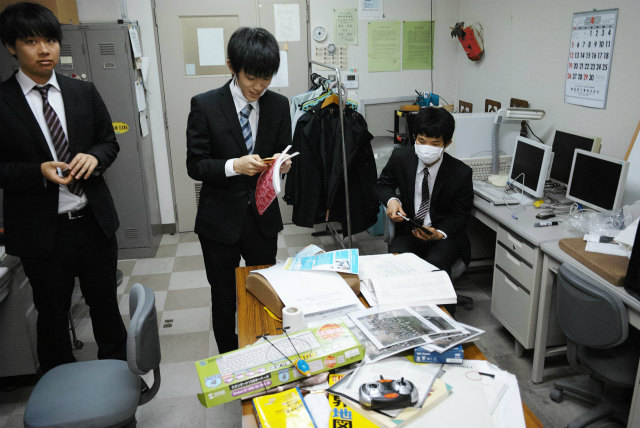
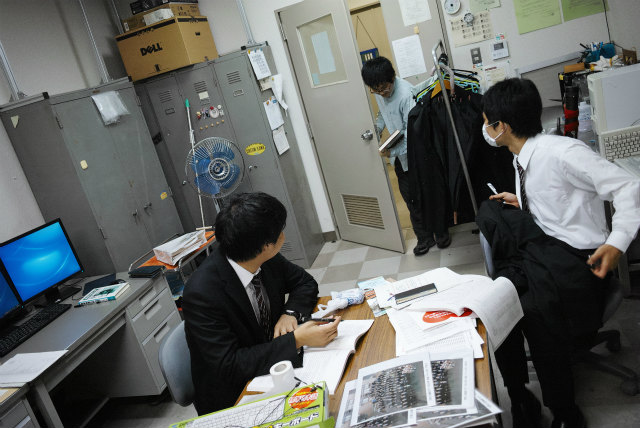
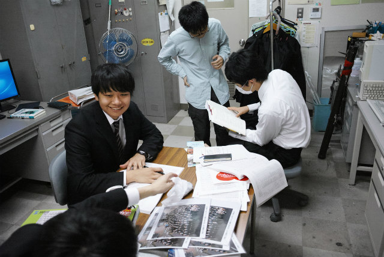
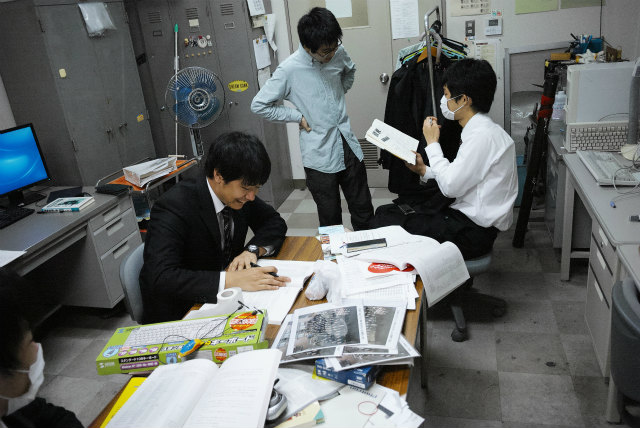

| ・ 入学宣誓式 (H27.04.06) | |||
去年は2人計測研に進学しましたが、今年はウチから2人と秋山研から1人で3人。で、いきなり3×3が直撃。一気に取得単位数が倍増でかつクォーター制の新M1。ドンマイ！B4はB4のウチにとれるだけとっておきましょう。一方で新M2は就活後ろ倒しの影響で、桜というか咲くのはひまわりになるんでは？ |
|||
|
秋山研から合流のTくん |
Y西「ありえへん量、、、B1かっ！」 | ||
|
半笑いなTくん |

どうすんのこれ | ||
|
まだ物理よりはマシ |
ひそかにB4で院の単位を取ってるTくん | ||
|
それでも1科目だけ |

B4のH谷川くん入室 | ||
|

誤ベクトル処理どうしましょ？ |

図書館に論文コピーいこか | ||